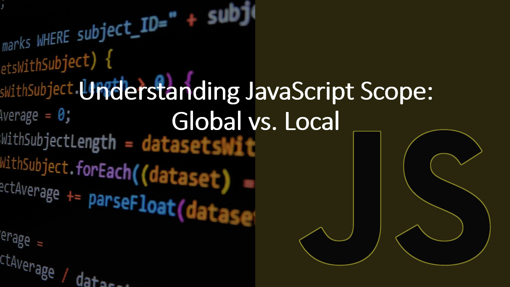

Introduction​
Understanding scope is crucial for writing well-organized and bug-free JavaScript programs.
In this blog article, we'll deive into the concepts of global and local scope, their differences, and how they impact variable access and lifetime.
What is Scope?​
Scope refers to the accessibility and visibility of variables within different parts of your code.
In JavaScript, scope is determined by where a variable is declared. Variables declared outside of a function are global variables and are accessible throughout your program. Variables declared inside a function are local variables and are only accessible within the function.
Suggested Tutorials 📑:​
1. Global Scope​
Global variables are declared outside of a function and are accessible throughout your program.
Global variables are accessible from any function, even functions defined after the variable declaration. Global variables are also accessible from any function defined in any script on the page.
As an example:
const globalVar = 'I am global';
function printGlobalVar() {
console.log(globalVar);
}
printGlobalVar();
console.log(globalVar);
In the above code:
- The variable
globalVar is declared outside of any function, making it a global variable. - The function
printGlobalVar() is defined after the variable declaration, but it can still access the global variable globalVar. - The global variable
globalVar is accessible from any function, even functions defined after the variable declaration.
2. Local Scope​
Local variables are declared inside a function and are only accessible within the function.
Local variables are accessible only from the function in which they are declared. Local variables are also accessible from any function defined within the function in which they are declared.
As an example:
function printLocalVar() {
const localVar = 'I am local';
console.log(localVar);
}
printLocalVar();
Suggested Tutorials 📑:​
3. Block Scope(ES6)​
Block scope refers to the accessibility of variables within a block of code. A block of code is defined by a pair of curly braces {}.
Variables declared with let and const are block-scoped. Variables declared with var are function-scoped.
As an example:
if (true) {
const blockVar = 'I am in a block';
console.log(blockVar);
}
In the above code:
- The variable
blockVar is declared inside a block of code, making it a block-scoped variable. - The variable
blockVar is accessible only within the block of code in which it is declared.
4. Function Scope(ES5)​
Variables declared with var are function-scoped. Variables declared with let and const are block-scoped.
As an example:
function foo() {
var x = 10;
console.log(x);
{
let y = 20;
console.log(y);
}
console.log(y)
{
const z = 30;
console.log(z);
}
console.log(z)
}
foo();
In the above code:
- The variable
x is declared inside a function, making it a function-scoped variable. y and z are declared inside a block of code, making them block-scoped variables.
Suggested Tutorials 📑:​
5. Avoiding Scope Issues​
To avoid scope-related bugs, it's recommended to always declare variables with appropriate scope using const, let, or var. Be mindful of naming collisions between global and local variables.
As an example:
const globalVar = 'Global';
function exampleFunction() {
const localVar = 'Local';
console.log(globalVar);
console.log(localVar);
}
exampleFunction();
console.log(globalVar);
In the above code:
- The variable
globalVar is declared outside of any function, making it a global variable. - The variable
localVar is declared inside a function, making it a local variable. - The global variable
globalVar is accessible from any function, even functions defined after the variable declaration.
6. Lexical Scope​
When a function defined inside another function has access to the variables declared in the outer function. However, the outer function does not have access to the variables declared in the inner function.
As an example:
function outerFunction() {
const outerVar = 'I am from outer function';
console.log(outerVar);
function innerFunction() {
const innerVar = 'I am from inner function';
console.log(outerVar);
console.log(innerVar);
}
innerFunction();
}
outerFunction();
In the above code:
- The variable
outerVar is declared in the outer function, making it accessible from the inner function. - The variable
innerVar is declared in the inner function, making it accessible only within the inner function.
Suggested Tutorials 📑:​
Conclusion​
In this article, we learned about the concepts of global and local scope, their differences, and how they impact variable access and lifetime. We also learned about block scope, function scope, and lexical scope. Understanding scope is crucial for writing well-organized and bug-free JavaScript programs.
We hope you found this article helpful.
Happy coding! 🚀